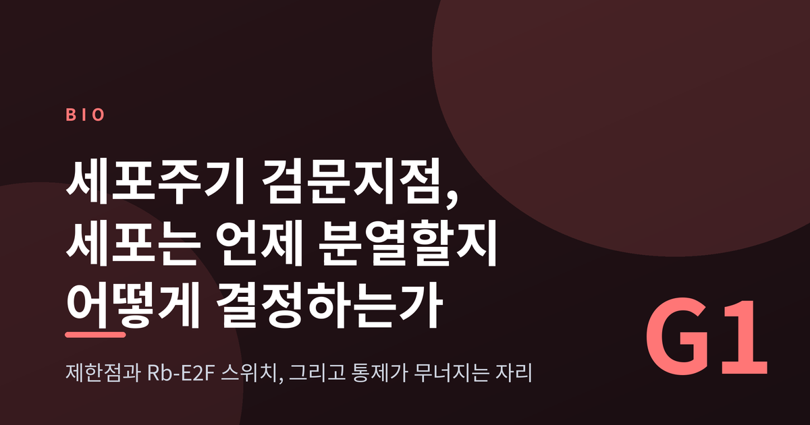
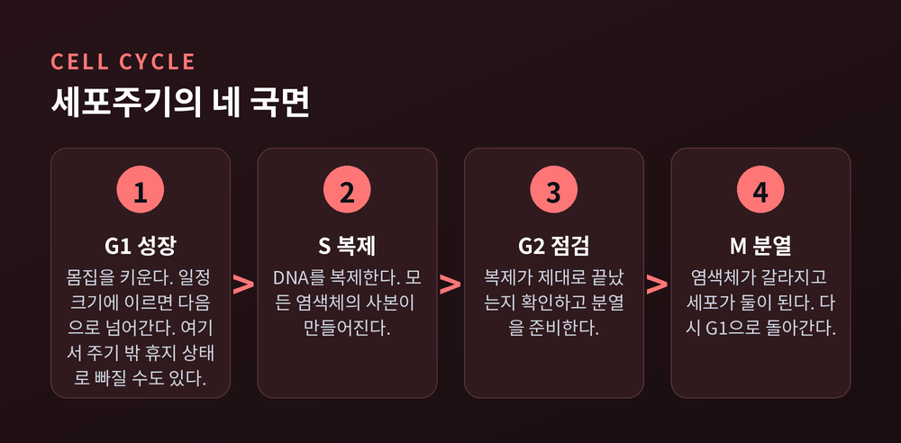
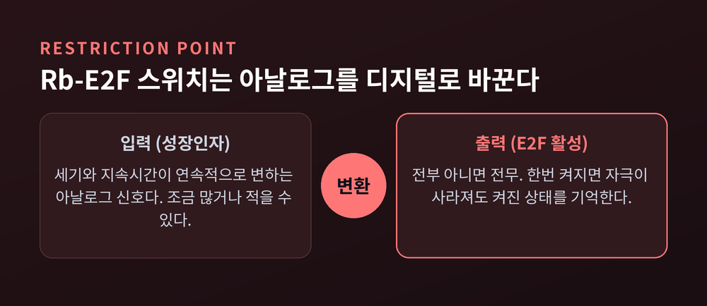
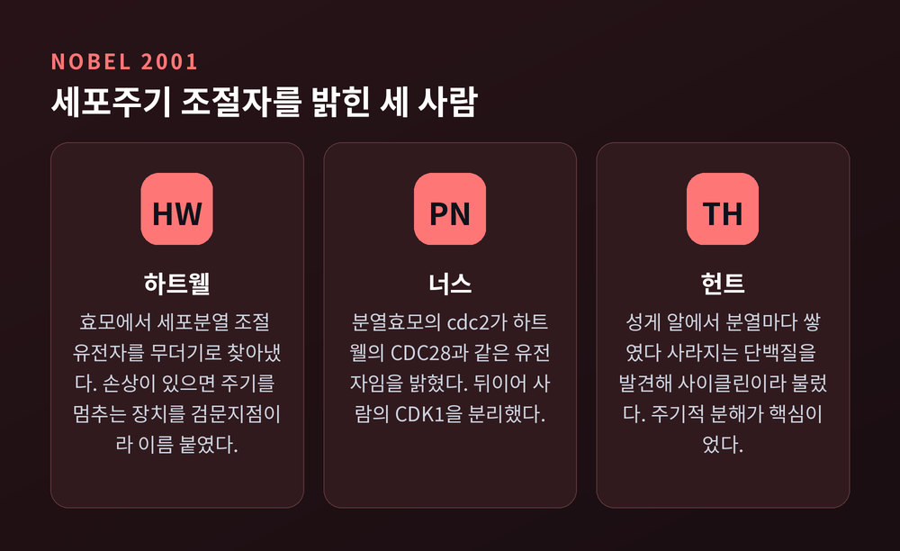
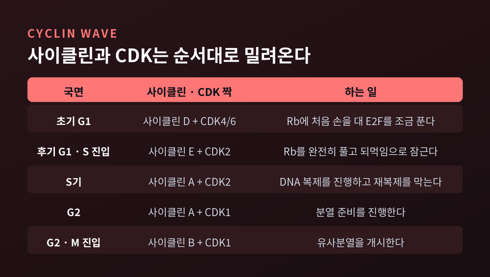
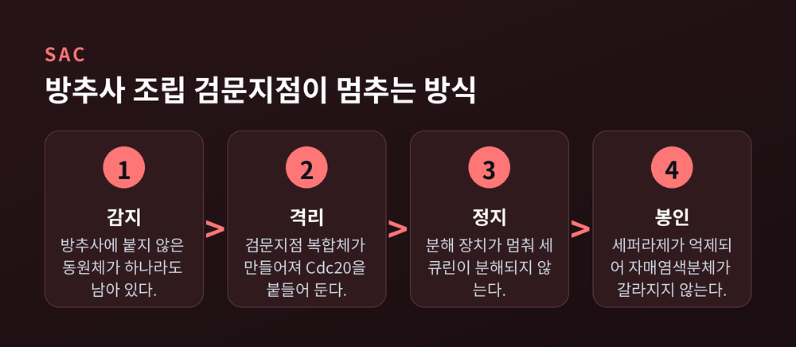
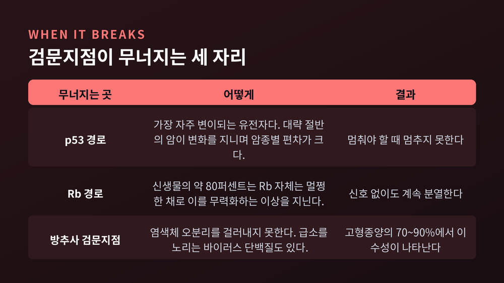

세포주기 검문지점, 세포는 언제 분열할지 어떻게 결정하는가

이번 글에서는 세포가 분열 여부를 결정하는 방식과 그 결정을 감시하는 검문지점을 정리해 보겠습니다. 세포주기라는 이름은 익숙하지만, 그 안에서 실제로 무엇이 판정을 내리는지는 덜 알려져 있습니다.
먼저 결론을 세 줄로 압축하겠습니다.
- 세포는 조금씩 분열하지 않습니다. 특정 지점에서 켜짐과 꺼짐 중 하나로 결정합니다.
- 그 결정을 만드는 것은 사이클린과 CDK라는 두 부품의 주기적 진동이고, 결정을 검사하는 것이 검문지점입니다.
- 암은 대체로 새로운 능력을 얻어서가 아니라, 이 검문지점이 무너져서 생깁니다.
분열은 예약제로 진행됩니다
성인 한 사람의 몸은 약 100조 개의 세포로 이루어져 있습니다. 조직 1그램당 평균 10억 개가 들어 있습니다. 이 전부가 수정란 한 개에서 나왔습니다.
세포주기는 네 국면으로 나뉩니다.
G1에서 세포는 몸집을 키웁니다. 일정 크기에 도달하면 S기로 넘어가 DNA를 복제합니다. G2에서 복제가 제대로 끝났는지 점검하고 분열을 준비합니다. M기에서 염색체가 갈라지고 세포가 둘이 됩니다. 그리고 다시 G1입니다.
포유류 세포에서 이 한 바퀴는 대개 10시간에서 30시간이 걸립니다.
중요한 것은 모든 세포가 이 바퀴를 계속 돌지 않는다는 점입니다. G1의 세포는 주기 밖으로 빠져나와 G0라는 휴지 상태에 머무를 수 있습니다. 우리 몸의 상당수 세포가 지금 그 상태에 있습니다.

1974년, 되돌아올 수 없는 지점
1974년 아서 파디는 이상한 규칙성을 발견했습니다.
정상 동물세포는 여러 종류의 영양 결핍으로 증식을 멈춥니다. 결핍의 원인은 제각각인데, 세포가 도달하는 정지 상태는 늘 똑같았습니다. 그리고 영양을 회복시키면 G1의 같은 자리에서 다시 출발했습니다.
파디는 그 자리에 이름을 붙였습니다. 제한점(restriction point)입니다.
이 지점의 성질이 결정적입니다. 제한점을 넘기 전의 세포는 바깥 신호에 의존합니다. 성장인자를 끊으면 멈춥니다. 그런데 제한점을 넘고 나면 달라집니다. 바깥 신호를 전부 차단해도 세포는 주기를 끝까지 돕니다.
파디는 논문에서 한 가지를 더 제안했습니다. 악성 세포는 이 제한점 통제를 잃어버렸다는 것입니다. 1974년의 추정이었지만, 이후 반세기 동안 이 방향은 대체로 지지받았습니다.
켜지거나 꺼지거나, 중간은 없습니다
제한점의 분자적 실체는 Rb와 E2F라는 두 단백질의 관계입니다.
E2F는 S기 진입에 필요한 유전자들을 켜는 전사인자입니다. 평소에는 Rb가 E2F를 붙들고 있습니다. 브레이크를 밟고 있는 셈입니다.
성장인자 신호가 들어오면 사이클린 D와 결합한 CDK4/6이 Rb를 인산화합니다. Rb의 손아귀가 느슨해지고 E2F가 조금 풀려납니다. 풀려난 E2F는 사이클린 E를 만들고, 사이클린 E와 결합한 CDK2가 Rb를 완전히 인산화합니다.
여기서 되먹임이 생깁니다. E2F가 CDK2를 만들고, CDK2가 Rb를 더 풀어 E2F를 더 만듭니다. 한 번 돌기 시작하면 스스로를 증폭합니다.
2008년 듀크대 연구진은 이 회로가 쌍안정 스위치로 작동한다는 것을 보였습니다. 혈청 자극은 연속적으로 변하는 아날로그 입력입니다. 그런데 E2F의 반응은 전부 아니면 전무입니다. 한번 켜지면 자극이 사라져도 켜진 상태를 기억합니다.
세포는 "조금 분열"하지 않습니다. 아날로그 입력을 받아 디지털 출력을 내놓습니다.

엔진은 CDK, 변속기는 사이클린
이 부품들의 정체를 밝힌 세 사람이 2001년 노벨 생리의학상을 함께 받았습니다.
레런드 하트웰은 1970년부터 1971년 사이의 실험에서 출아효모의 세포분열 조절 유전자 100개 이상을 찾아냈습니다. CDC 유전자라고 이름 붙였습니다. 그중 CDC28은 G1 진행의 첫 단추여서 '스타트'라고도 불립니다.
하트웰의 더 큰 기여는 개념 하나였습니다. 효모에 방사선을 쬐다가, 그는 DNA가 손상되면 세포주기가 멈춘다는 것을 관찰했습니다. 복구할 시간을 벌기 위해서입니다. 그는 이 통제 장치를 검문지점(checkpoint)이라고 불렀습니다. 1989년 논문에서 이 개념을 공식화했습니다.
폴 너스는 분열효모를 썼습니다. 출아효모와는 10억 년도 더 전에 갈라진 먼 친척입니다. 1970년대 중반 그는 cdc2 유전자가 G2에서 M기로 넘어가는 관문을 통제한다는 것을 밝혔습니다. 그런데 뜻밖의 결과가 나왔습니다. cdc2는 하트웰의 CDC28과 같은 유전자였습니다. 하나의 유전자가 세포주기의 양쪽 관문을 모두 지키고 있었던 것입니다. 1987년 그는 사람의 상응 유전자를 분리했습니다. 오늘날 CDK1이라 부릅니다.
팀 헌트의 발견은 1982년 여름 우즈홀 해양생물학연구소에서 나왔습니다. 성게 알의 단백질 합성을 추적하던 중, 분열마다 쌓였다가 급격히 사라지는 단백질을 발견했습니다. 양이 주기적으로 오르내려 사이클린이라 이름 붙였습니다. 핵심은 단백질을 만드는 것만이 아니라 정해진 때에 부수는 것이 주기를 만든다는 통찰이었습니다.
노벨상 위원회의 비유가 정확합니다. CDK의 양은 주기 내내 일정합니다. 변하는 것은 활성뿐이고, 그 활성을 조절하는 것이 사이클린입니다. CDK가 엔진이라면 사이클린은 변속기입니다.

사이클린은 정해진 순서로 파도처럼 밀려옵니다.

문턱을 넘으면 되돌아오지 않습니다
G2에서 M기로 넘어가는 관문에도 같은 원리가 작동합니다.
사이클린 B와 결합한 CDK1이 유사분열을 개시합니다. 이 활성화에 두 개의 되먹임이 얽혀 있습니다. CDK1은 Cdc25를 활성화하고, 활성화된 Cdc25는 CDK1의 억제성 인산기를 떼어냅니다. 동시에 CDK1은 Wee1을 억제하고, 억제된 Wee1은 CDK1을 덜 막습니다. 가속 페달과 브레이크가 서로를 밀어냅니다.
개구리 알 추출물 실험에서 이 스위치가 히스테리시스를 보인다는 것이 확인되었습니다. 들어갈 때 필요한 사이클린 농도와 나올 때 필요한 농도가 다르다는 뜻입니다.
세포는 유사분열에 반쯤 들어가지 않습니다. 문턱을 넘으면 전부 넘어가고, 되돌아가려면 훨씬 아래까지 내려가야 합니다.
염색체 하나가 어긋나면 전부 멈춥니다
마지막 관문은 방추사 조립 검문지점입니다. 흔히 SAC라고 부릅니다.
이 검문지점이 확인하는 것은 단 하나입니다. 모든 염색체가 방추사에 제대로 붙었는가.
붙지 않은 동원체가 하나라도 있으면, 그 자리에서 Mad2와 BubR1과 Bub3가 모여 검문지점 복합체를 만듭니다. 이 복합체는 Cdc20이라는 단백질을 붙들어 격리합니다. Cdc20이 묶이면 APC/C라는 분해 장치가 작동하지 못합니다.
그러면 세큐린이 분해되지 않습니다. 세큐린은 세퍼라제를 억제하는 단백질입니다. 세퍼라제는 자매염색분체를 묶고 있는 밧줄을 자르는 가위입니다. 결국 가위가 봉인되고, 염색체는 갈라지지 않습니다.
모든 염색체가 제대로 붙는 순간 복합체가 풀리고 Cdc20이 방출됩니다. 그때서야 가위가 작동합니다.
이 장치가 얼마나 예민한지 보여준 실험이 1995년에 나왔습니다. 연구진은 마지막까지 한쪽에만 붙어 있던 염색체 하나를 관찰했습니다. 그 염색체가 제대로 붙으면 평균 23분 뒤에 분리가 시작되었습니다. 그런데 그 염색체의 동원체를 레이저로 태워 없애자, 17분 만에 분리가 시작되었습니다.
부착되지 않은 동원체 하나가 세포 전체에 정지 신호를 보내고 있었던 것입니다. 46개 중 하나입니다.

손상되면 시간을 법니다
DNA가 손상되면 별도의 회로가 작동합니다.
이중가닥이 끊어지면 ATM이, 복제분기점이 무너지면 ATR이 감지합니다. 이들은 각각 Chk2와 Chk1을 거쳐 신호를 내려보냅니다.
신호가 모이는 곳이 p53입니다. 평소 p53은 MDM2에 붙들려 빠르게 분해됩니다. 그런데 손상 신호가 p53을 인산화하면 MDM2와의 결합이 끊어지고, p53이 세포 안에 쌓입니다.
쌓인 p53은 p21을 만듭니다. p21은 CDK2를 직접 억제합니다. 앞서 본 G1/S 스위치의 마무리 담당이 CDK2였습니다. 그 손을 붙잡는 것입니다.
정리하면 이렇습니다. 손상을 감지하고, 신호를 전달하고, p53을 쌓고, p21로 CDK2를 멈춥니다. 세포는 분열을 미루고 복구할 시간을 법니다.
다만 이 경로가 유일한 길은 아닙니다. p53이 없는 세포는 p38MAPK와 MK2를 거치는 다른 경로에 기대어 살아남는다는 보고가 있습니다. 검문 체계에는 상당한 중복성이 있습니다.
통제가 무너지는 자리
여기까지가 정상입니다. 이제 무너지는 쪽을 보겠습니다.
p53. TP53은 사람의 악성종양에서 가장 자주 변이되는 유전자입니다. 대략 절반의 암이 이 유전자에 변화를 지닙니다. 다만 편차가 큽니다. 갑상선암에서는 수 퍼센트에 그치지만, 고등급 장액성 난소암이나 소세포폐암에서는 거의 100%에 가깝습니다.
Rb 경로. 더 흥미로운 통계가 있습니다. 인간 신생물의 약 80%는 Rb 단백질 자체는 멀쩡히 가지고 있습니다. 대신 CDK4/6 활성을 높이는 다른 이상을 지녀 결과적으로 Rb를 무력화합니다. 흑색종에서는 이 경로 교란이 90%에 이릅니다. 브레이크를 부수지 않고 가속 페달을 고정하는 방식입니다.
바이러스도 같은 자리를 노립니다. 자궁경부암을 일으키는 고위험형 인유두종바이러스의 E7 단백질은 Rb에 직접 붙어 E2F를 풀어냅니다. 나아가 Rb의 반감기를 줄여 분해로 보냅니다. 바이러스가 수억 년 된 검문 장치의 급소를 정확히 찾아낸 셈입니다.
SAC가 무너지면. 결과는 염색체 수의 이상, 곧 이수성입니다. 고형종양의 70에서 90퍼센트가 어느 정도의 이수성을 보입니다. 특정 유전자 변이보다도 흔한 특징입니다.

스위치를 되돌리는 약
이 지식은 이미 약이 되었습니다.
CDK4/6 억제제는 이름 그대로 사이클린 D와 CDK4/6의 결합을 막습니다. Rb가 인산화되지 않고, E2F가 억제되고, 세포는 G1에 멈춥니다. 앞에서 본 제한점 스위치를 인위적으로 꺼두는 약입니다.
2015년 2월 팔보시클립이 미국에서 처음 승인되었습니다. 2017년 리보시클립과 아베마시클립이 뒤따랐습니다. 2021년에는 아베마시클립이 조기 유방암 보조요법으로도 승인되었습니다.
숫자를 보겠습니다. 팔보시클립을 레트로졸과 함께 쓴 3상 시험에서, 무진행생존기간 중앙값은 27.6개월이었습니다. 위약군은 14.5개월이었습니다. 약 15개월의 차이입니다.
여기서 멈추면 안 됩니다. 같은 시험의 전체생존기간 분석에서는 통계적으로 유의한 차이가 나오지 않았습니다. 수치상 연장은 있었지만 유의성에 도달하지 못했습니다.
진행을 늦추는 것과 생존을 늘리는 것은 같지 않습니다. 이 간극은 아직 충분히 설명되지 않았습니다.
한계는 더 있습니다. 이 약은 세포를 죽이지 않고 멈춥니다. 멈춘 세포는 되돌아올 수 있는 휴지 상태로 갈 수도, 돌아오지 못하는 노화 상태로 갈 수도 있습니다. 어느 쪽이 될지는 아직 완전히 통제되지 않습니다.
저항성의 대표적 경로는 Rb 자체의 소실입니다. 약이 겨누는 것은 CDK4/6이지만 효과는 Rb를 통해 나오기 때문입니다. 붙들 손잡이가 사라지면 약도 소용이 없습니다.
위 내용은 검문지점 원리를 이해하기 위한 배경 설명입니다. 개별 치료 판단은 담당 의료진과 상의하실 일입니다.
아직 논쟁 중인 것들
교과서에 실린 그림이 다 정리된 이야기처럼 보이지만, 실제로는 그렇지 않습니다.
첫째, 제한점이 언제 결정되는가입니다. 파디 이래의 고전적 견해는 해당 주기의 G1 중후반이었습니다. 그런데 2013년 스탠퍼드 연구진은 살아있는 세포의 CDK2 활성을 실시간으로 추적해 다른 그림을 보였습니다. 분열을 마치고 나온 세포들은 곧바로 두 집단으로 갈라집니다. 한쪽은 즉시 다음 주기에 착수하고, 다른 쪽은 CDK2 활성 없이 휴지 상태로 들어갑니다. 이 갈림은 p21이 통제하며, 이전 주기 말기에 이미 조절되고 있었습니다.
분열할지 말지의 결정 일부가 어머니 세포에서, 분열이 끝나기도 전에 내려진다는 뜻입니다.
둘째, Rb 인산화의 단계입니다. 고전 모형은 CDK4/6이 Rb를 점진적으로 인산화해 E2F를 푼다고 봅니다. 2014년의 반론은 다릅니다. CDK4/6은 단일 인산화만 수행할 뿐이고, Rb를 실제로 불활성화하는 것은 후기 G1의 사이클린 E와 CDK2라는 것입니다. 어느 쪽이 맞는지는 아직 결론이 나지 않았습니다.
예전에는 세포주기를 시계처럼 그렸습니다. 지금은 여러 개의 스위치와 되먹임이 얽힌 회로에 가깝게 봅니다. 그림은 앞으로도 몇 번 더 바뀔 것입니다.
정리하면 이렇습니다.
세포는 분열할지 말지를 매번 새로 판단합니다. 그 판단은 애매하게 내려지지 않습니다. 스위치가 켜지거나 꺼지거나 둘 중 하나입니다. 그리고 그 판단이 옳았는지를 검사하는 관문이 주기의 마디마다 서 있습니다.
암은 대체로 세포가 새로운 힘을 얻어 생기는 병이 아닙니다. 검문소가 하나씩 비워지면서 생기는 병에 가깝습니다.
그렇다면 우리 몸에서 지금 이 순간에도 수많은 세포가 조용히 멈춰 서 있다는 뜻입니다. 분열하지 않기로 한 결정도, 분열하기로 한 결정만큼 정교한 일이었습니다.